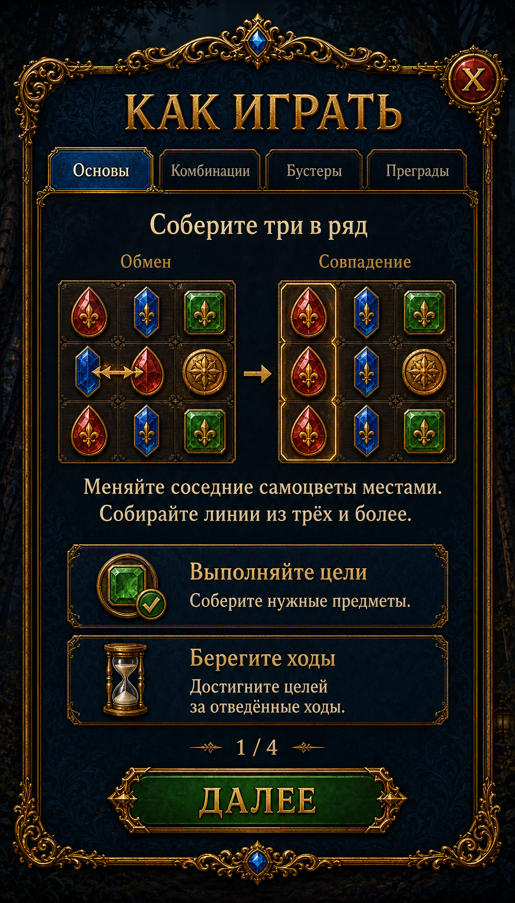

Tutorial / Help — Design R2
A new instructional composition based on the supplied navy-and-gold panel. Generated through Scenario; this is a design preview, not a Unity screenshot.

Scenario design concept · 1024 × 1792 · first of four proposed help sections.The illustrated swap produces matching red and blue columns; only red is highlighted in this concept. A native teaching example should highlight both or use a single-match arrangement.
One generation, 49 CU. Existing Unity page and gameplay remain unchanged. Native implementation would retain isolated sprites, live localized text and interactive controls.